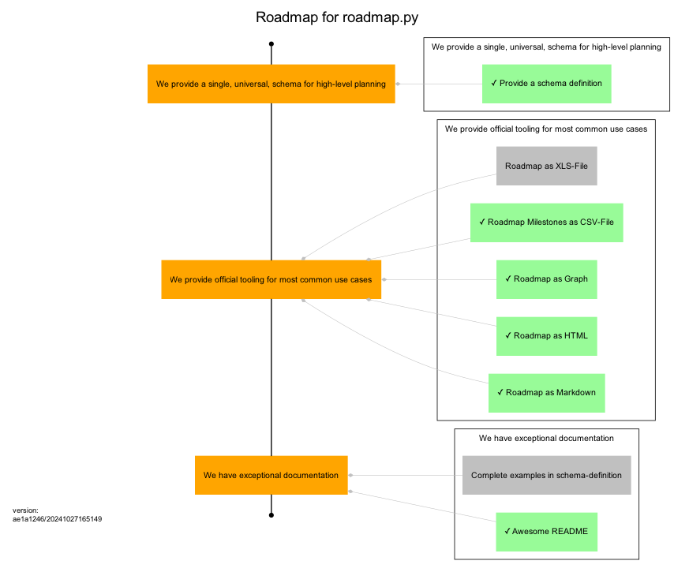

This is the planning roadmap for the uroflavin/roadmap project. It acts as both the plan for implementing this tool as well as a demonstration of what a roadmap might look like.
One good example is this roadmap itself. What to-do and what is already done to implement roadmap.py can you see in this picture.

One of the things you’ll immediately notice about this file is that it uses Markdown for formatting of text and is designed around a structured YAML schema. The goal is to make this as easy as possible for humans to read and reason about, while also enabling powerful visualizations to be generated based on the content.